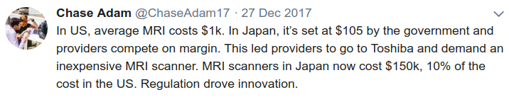
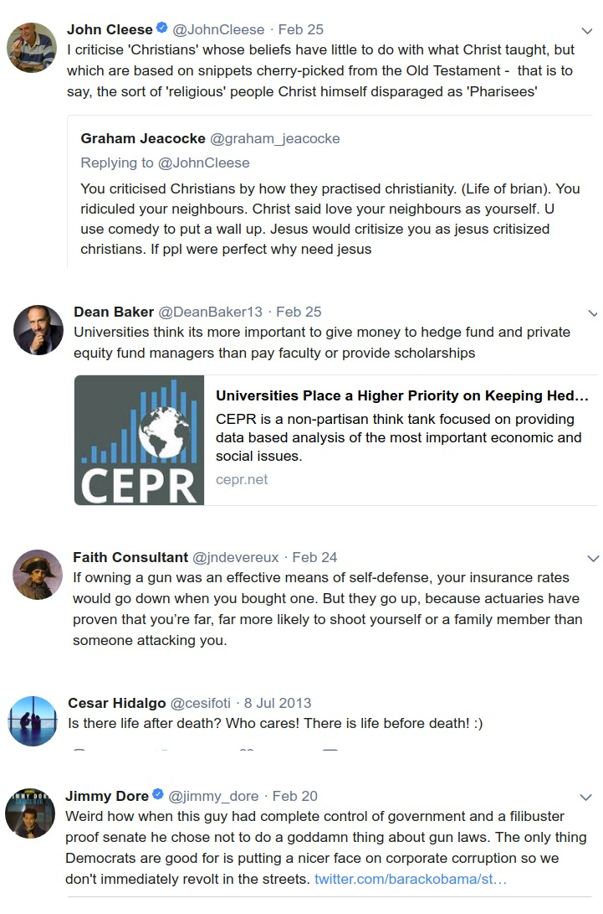

Week 12
Some day in the future we will look back at previous modes of schooling and wonder how humanity even survived this barbaric style of teaching.
The learning speed Khan refers to might also be indirectly related to different sytles of learning; according to Drucker there are four: learning by doing, teaching, writing, listening. The "good students" of now are almost always "listener learners". They are able to keep their listening attention for long periods of time. But others learn differently. EaaS like Khanacademy can help other learning styles to thrive. Plus, the old style is already incredibly inefficient even what for what it is engineered to do. We need to move on. Time to rock-n-roll. Look at this guy. How can any teacher compete with that? Do they have to?
Salman Khan: "When I started posting video lessons on YouTube [KhanAcademy], it became clear that many students around the world were using them to learn outside of a formal classroom. What was more surprising was that I soon got letters and comments from teachers. Some were pointing their students to the videos as a supplemental tool. Others, however, were using them to rethink their class rooms altogether.
These teachers saw that I had already made available lectures that students could watch at their own time and pace. So the teachers decided to stop giving lectures themselves. Instead, they used scarce class time for the type of problem solving more normally done as homework. Students could then watch the videos at home. This solved two problems at once.
As we’ve seen, students learn at different rates. Attention spans tend to max out at around fifteen minutes. Active learning creates more durable neural pathways than passive learning. Yet the passive in-class lecture—in which the entire class is expected to absorb information at the same rate, for fifty minutes or an hour, while sitting still and silent in their chairs— remains our dominant teaching mode. This results in the majority of students being lost or bored at any given time, even when there is a great lecturer.
They then go home and attempt to do homework, which raises another set of concerns. Generally, kids are asked to work in a vacuum. If they get stuck on a problem, there’s nowhere to turn for help. Frustration—and often sleep deprivation—sets in. By the time class reconvenes, chances are the exact nature of the difficulty has been forgotten. Throughout this process, students get limited feedback on how well they are actually grasping the information. Until the unit exam, teachers too are left with little feedback on how well the students understand the topic"
Should there be no privatization?
I did not say that
I am not for government running companies. But u have to draw a line somewhere, protect the public from excessive privatization. Ever since 1989 things got out of hand.
Question
Why would a farmer like capitalism?
They want a good price for their crops
But then when things go wrong, they also want to be bailed out (we are needed to feed people, we are too important to fail). I guess their bad habits still persist in the financial class today.
Question
Is finance related to farming?
Yes
First futures contract was for rice trading in the Far East.
Question
Worst examples of trampling of public sphere in any country?
Go to Goatfucker HQ
Farming started around Hilly Flanks, so this region even today suffers from an absence of public sphere. Go to the "richest" area in Istanbul, and look at the sidewalks, how narrow they are. This only happens when property owners extends their sphere by any means, at the expense of the public.
The Gezi protest in TR, BTW, were not primarly about protecting the greenery. It was about protecting one of the few remaining public spaces in that area.
Question
But isn't the Jesus myth still weird?... Having no father all that...?
No
Farmers, villagers at the time were praying to bones, let's not forget, to their "ancient ones" (bcz inheriting land is all-important). "The man without a father" in this age is great sales pitch - whether created by divine intervention, or a smart politician.
Steve Keen on secular stagnation
MSNBC Gaslights Viewers & Dishonestly Smears Wikileaks #JimmyDore
#MRI

#guns #lotsOfGuns
